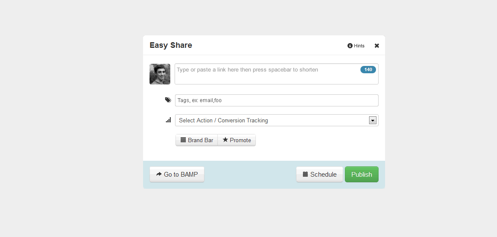
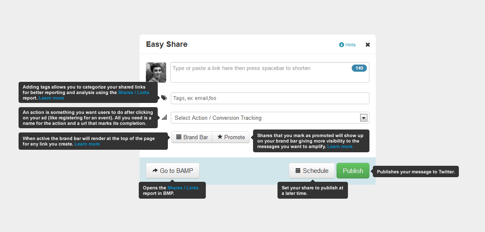

Design Patterns for Contextual Help
Contextual help is help available to the user along with its subject functions, without requiring an external document. Contextual help may link to external help documents for topics that are too long to be covered in-context.
In-line Help Box
When to use
- The user needs an introduction to the interface, not just to its functionality but to it's purpose or value.
- Several related interface elements combine to provide complex functionality, and need to be explained as a group.
- A user flow is divided into several sections, to which the above criteria apply.
Specifications
The Bizstrap alert and alert-info classes provide the basic form of the in-line help box. The box should be displayed immediately beneath a header and immediately above the functionality it references. In most cases, the box should be made collapsible. To make the box collapsible, include the "close" button in the upper right corner, but when the button is clicked, dismiss the box and show a help icon right aligned in the header row above the box. If the icon is clicked, expand the help box to its open state. When the icon is hovered over, show a version in Bizo Light Blue (#0095D5) to indicate clickability. The state the box was last in should be stored so it can be shown the same way if the user returns to the page.
In rare cases it may make sense to remove the collapse option, or to make the box completely dismissable.
Default state
Creative Tips
- Bizo supports the standard three IAB display ad creative sizes.
- Creatives can be JPEG, GIF, animated GIF or Flash.
- Be sure to only upload creatives that correspond to the selected size.
FAQ
If the in-line help box contains frequently asked questions, include a title and follow it with "FAQ" in a label-info label. Make the questions expandable/collapsible using the plus and minus sign glyphicons
Ad Placement FAQ
- Where will my ads show up?
- Will my ad look exactly like the preview?
Expandable
The content of the box should be kept as brief as possible. If it exceeds one paragraph, it should either be condensed or moved into a separate help document and linked from within the help box. If the content exceeds four lines (including title), shorten the box to hide anything below and allow the user to click to expand the box and show the full contents.
Creative Tips
- Bizo supports the standard three IAB display ad creative sizes.
- Creatives can be JPEG, GIF, animated GIF or Flash.
- Be sure to only upload creatives that correspond to the selected size.
More
Collapsed state
Field level help button
When to use
- The help content pertains to a specific element AND
- The help content provides more context or explanation of the element but is not critical for proper use.
Specifications
The glyphicon icon-info-sign provides the visual cue that field level help is available. Ideally the icon should be placed to the right of the subject element. When the icon is hovered over, show a version in Bizo Light Blue (#0095D5) to indicate clickability. When the user clicks the icon, show the help popover.
If the content of the popover is more than five lines tall, cap its height and include a scrollbar for viewing more content.
Closed state
Open state
When the help is activated, show the popover to the right of the icon if space provides so that the help content can be in-line with its subject. If there is insufficient space to the right, show the popover below the icon.
Field help text
When to use
- The help content pertains to a specific form field AND
- The help content is essential to proper use of the control, even if for specific audiences or circumstances.
- The control seems obvious but has complexities or constraints that users should be aware of.
Specifications
Field help text is subtle text that accompanies a field and provides important information for using the field. The text must be kept extremely brief. If more information is required, consider using an in-line help box or linking to an external help document. Depending on form layout, the field help text may be placed either to the right or below the control.
Right Field Help
Help text
Below Field Help
Help text
Switchboard EasyShare Help
When to use
- The entire interface is small enough to fit on one screen without scrolling, with extra space around it on multiple sides.
- The help text for each element is brief.
- Minimal impact of help features on the UI is desired by expert users.
Specifications
Several controls on the interface have tooltips associated with them. Instead having a separate button to launch each tooltip, there is a single button used to activate all tooltips at once. When the button is clicked and the help text is active, the user may continue to use the rest of the interface as normal. Clicking the help button again deactivates all help messages.
Closed state
Active state
In the active state, all tooltips must be small enough to not overlap each other or any content of the interface.
Focus state
When a control in the interface has focus, any tooltip associated with it highlights to become more prominent.